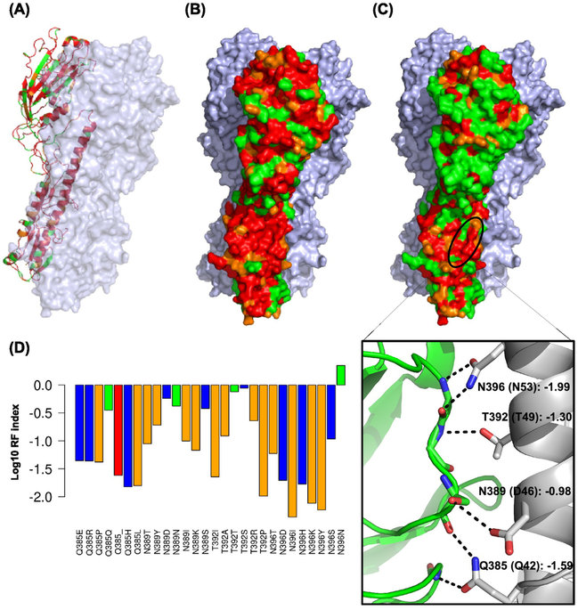

Use systems biology approaches to study virus-host interactions and to engineer vaccines
My laboratory takes systems biology approaches to characterize the virus replication capacity, in the presence of specific immune response, drug selection, and host-viral interactions, at the genomic scale. We integrate multi-disciplinary methods, including viral genetics, molecular and cellular biology, genomics, structural biology, microfluidics, informatics and mathematic modeling. We currently study the following viruses: Kaposi sarcoma-associate herpesvirus (KSHV), murine herpesvirus-68 (MHV-68), influenza virus, Zika virus and human immune-deficient virus (HIV). We have recently developed a method that will enable us to generate a functional genetic map of an entire viral genome at single nucleotide resolution. These studies will generate functional genomic maps that lay the foundation for comprehensively defining virus-host interactions, and accelerate rational vaccine design and drug development.

One focus of my lab is to generate and utilize the high-resolution viral genomic information to precisely design vaccines. Traditional genetics focuses on the linkage of one mutation and one phenotype. Our approach is an innovative genetic platform that enables us to scan the entire HIV-1/influenza virus genome to identify sequences essential for viral replication at particular selection conditions such as interferons and cytotoxic T cells, etc. The identification of functional sequences in the entire viral genome at a high resolution establishes a solid foundation for rational vaccine design and enable precision-engineering. We have demonstrated with herpesvirus and influenza virus in mice-infection models, the viruses become more immunogenic than the wild type, but severely attenuated in vivo when we systematically remove the immune-evasion functions from the virus genome. Thereby, it can be a general rational approach to develop therapeutic or preventive vaccine for many other pathogens. Furthermore, we can use this approach to engineer viruses (cancer vaccines) to preferentially replicate in cancer cells and strongly stimulate immune responses against tumor antigens.